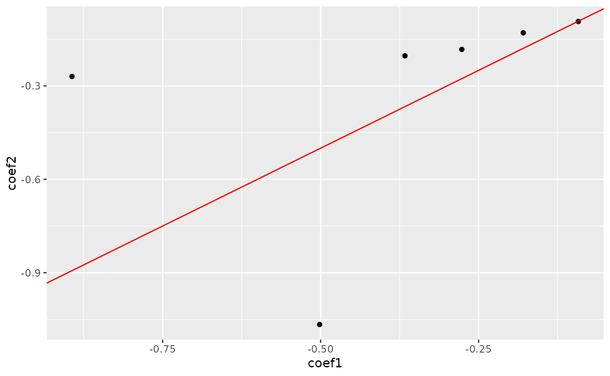
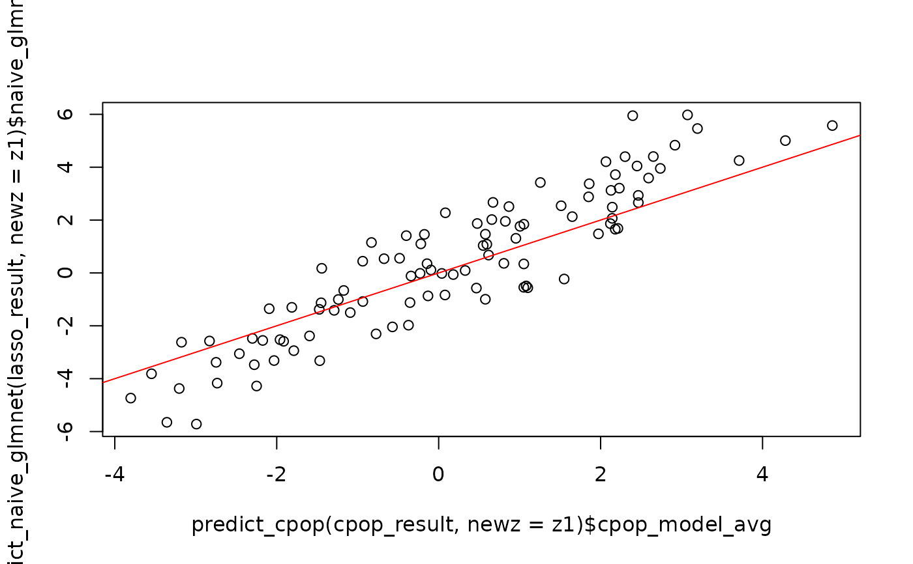
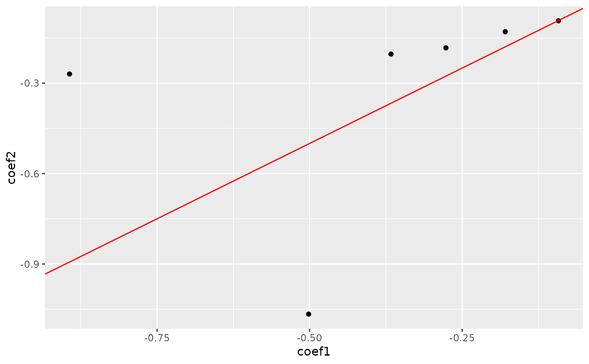
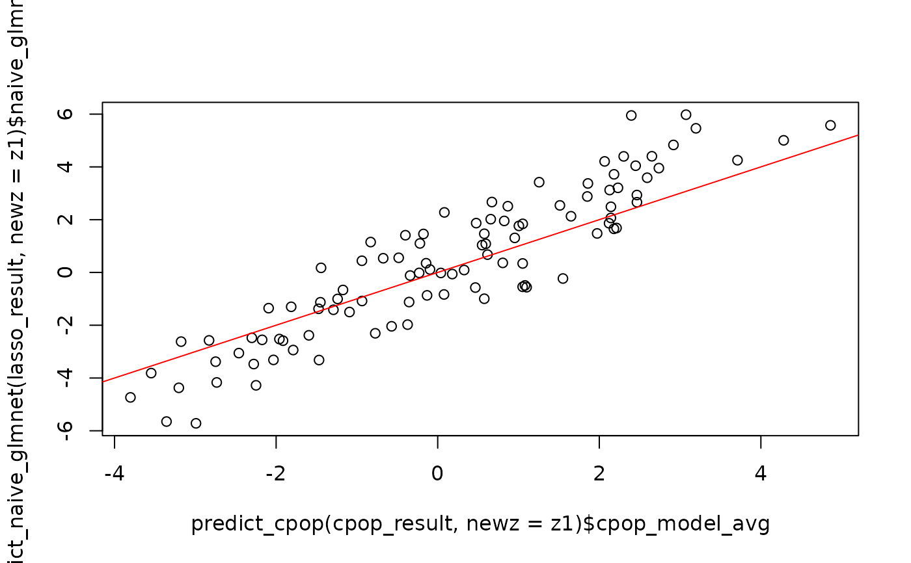

Naive glmnet fitting procedure
naive_glmnet.RdNaive glmnet fitting procedure
naive_glmnet(
x1,
x2,
y1,
y2,
s = "lambda.min",
family = "binomial",
z1,
z2,
...
)Arguments
- x1
A data matrix of size n (number of samples) times p (number of features)
- x2
A data matrix of size n (number of samples) times p (number of features)
- y1
A vector
- y2
A vector
- s
Default to "lambda.min"
- family
family of glmnet
- z1
(Deprecated) a data matrix, columns are pairwise-differences between the original data columns.
- z2
(Deprecated) a data matrix, columns are pairwise-differences between the original data columns.
- ...
Extra parameter settings for cv.glmnet
Value
A vector
Examples
data(cpop_data_binary, package = 'CPOP')
## Loading simulated matrices and vectors
x1 = cpop_data_binary$x1
x2 = cpop_data_binary$x2
y1 = cpop_data_binary$y1
y2 = cpop_data_binary$y2
set.seed(1)
cpop_result = cpop_model(x1 = x1, x2 = x2, y1 = y1, y2 = y2, alpha = 1, n_features = 10)
#> Absolute colMeans difference will be used as the weights for CPOP
#> Fitting CPOP model using alpha = 1
#> Based on previous alpha, 0 features are kept
#> CPOP1 - Step 01: Number of selected features: 0 out of 190
#> CPOP1 - Step 02: Number of selected features: 9 out of 190
#> CPOP1 - Step 03: Number of selected features: 16 out of 190
#> 10 features was reached.
#> A total of 16 features were selected.
#> Removing sources of collinearity gives 13 features.
#> 10 features was reached.
#> A total of 13 features were selected.
#> CPOP2 - Sign: Step 01: Number of leftover features: 9 out of 13
#> The sign matrix between the two data:
#>
#> -1 0 1
#> -1 0 0 1
#> 0 0 0 0
#> 1 3 0 0
#> CPOP2 - Sign: Step 02: Number of leftover features: 8 out of 13
#> The sign matrix between the two data:
#>
#> -1 0 1
#> -1 0 0 0
#> 0 0 0 0
#> 1 1 0 0
#> CPOP2 - Sign: Step 03: Number of leftover features: 8 out of 13
#> The sign matrix between the two data:
#>
#> -1 0 1
#> -1 0 0 0
#> 0 0 0 0
#> 1 0 0 0
lasso_result = naive_glmnet(x1 = x1, x2 = x2, y1 = y1, y2 = y2, alpha = 1, intercept = FALSE)
cpop_result
#> CPOP model with 8 features
#> # A tibble: 9 × 3
#> coef_name coef1 coef2
#> <chr> <dbl> <dbl>
#> 1 (Intercept) 0 0
#> 2 X01--X10 -0.322 -0.246
#> 3 X09--X17 0.722 0.521
#> 4 X11--X14 0.130 0.00292
#> 5 X12--X20 0.404 0.170
#> 6 X01--X07 -0.437 -0.408
#> 7 X01--X15 -0.158 -0.334
#> 8 X01--X17 -0.901 -0.644
#> 9 X04--X12 0.353 0.431
lasso_result
#> $glmnet1
#>
#> Call: glmnet::cv.glmnet(x = z1, y = y1, family = family, alpha = 1, intercept = FALSE)
#>
#> Measure: Binomial Deviance
#>
#> Lambda Index Measure SE Nonzero
#> min 0.02765 54 0.7032 0.09817 14
#> 1se 0.09267 28 0.7935 0.05895 7
#>
#> $glmnet2
#>
#> Call: glmnet::cv.glmnet(x = z2, y = y2, family = family, alpha = 1, intercept = FALSE)
#>
#> Measure: Binomial Deviance
#>
#> Lambda Index Measure SE Nonzero
#> min 0.03627 49 0.7289 0.09643 12
#> 1se 0.09195 29 0.8213 0.07194 9
#>
#> $coef_tbl
#> $coef_tbl[[1]]
#> # A tibble: 191 × 3
#> coef_name coef1 coef2
#> <chr> <dbl> <dbl>
#> 1 (Intercept) 0 0
#> 2 X01--X02 -0.0922 -0.0930
#> 3 X01--X03 0 0
#> 4 X01--X04 -0.502 -1.07
#> 5 X01--X05 -0.0663 0
#> 6 X01--X06 0 -0.0877
#> 7 X01--X07 0 0
#> 8 X01--X08 0 -0.311
#> 9 X01--X09 -0.893 -0.269
#> 10 X01--X10 -0.0945 0
#> # … with 181 more rows
#>
#>
#> attr(,"class")
#> [1] "naive_glmnet" "list"
plot_cpop(cpop_result)
#> $plot
 #>
#> $data
#> # A tibble: 8 × 3
#> coef_name coef1 coef2
#> <fct> <dbl> <dbl>
#> 1 X01--X10 -0.322 -0.246
#> 2 X09--X17 0.722 0.521
#> 3 X11--X14 0.130 0.00292
#> 4 X12--X20 0.404 0.170
#> 5 X01--X07 -0.437 -0.408
#> 6 X01--X15 -0.158 -0.334
#> 7 X01--X17 -0.901 -0.644
#> 8 X04--X12 0.353 0.431
#>
plot_cpop(lasso_result)
#> $plot

#>
#> $data
#> # A tibble: 6 × 3
#> coef_name coef1 coef2
#> <fct> <dbl> <dbl>
#> 1 X01--X02 -0.0922 -0.0930
#> 2 X01--X04 -0.502 -1.07
#> 3 X01--X09 -0.893 -0.269
#> 4 X01--X11 -0.367 -0.203
#> 5 X01--X13 -0.179 -0.129
#> 6 X01--X18 -0.277 -0.183
#>
z1 = pairwise_col_diff(x1)
z2 = pairwise_col_diff(x2)
plot(predict_cpop(cpop_result, newz = z1)$cpop_model_avg,
predict_naive_glmnet(lasso_result, newz = z1)$naive_glmnet_avg)
#> Warning: The `newz` argument is now deprecated in preference for `newx`,
#> CPOP prediction can still run.
abline(a = 0, b = 1, col = "red")

#>
#> $data
#> # A tibble: 8 × 3
#> coef_name coef1 coef2
#> <fct> <dbl> <dbl>
#> 1 X01--X10 -0.322 -0.246
#> 2 X09--X17 0.722 0.521
#> 3 X11--X14 0.130 0.00292
#> 4 X12--X20 0.404 0.170
#> 5 X01--X07 -0.437 -0.408
#> 6 X01--X15 -0.158 -0.334
#> 7 X01--X17 -0.901 -0.644
#> 8 X04--X12 0.353 0.431
#>
plot_cpop(lasso_result)
#> $plot

#>
#> $data
#> # A tibble: 6 × 3
#> coef_name coef1 coef2
#> <fct> <dbl> <dbl>
#> 1 X01--X02 -0.0922 -0.0930
#> 2 X01--X04 -0.502 -1.07
#> 3 X01--X09 -0.893 -0.269
#> 4 X01--X11 -0.367 -0.203
#> 5 X01--X13 -0.179 -0.129
#> 6 X01--X18 -0.277 -0.183
#>
z1 = pairwise_col_diff(x1)
z2 = pairwise_col_diff(x2)
plot(predict_cpop(cpop_result, newz = z1)$cpop_model_avg,
predict_naive_glmnet(lasso_result, newz = z1)$naive_glmnet_avg)
#> Warning: The `newz` argument is now deprecated in preference for `newx`,
#> CPOP prediction can still run.
abline(a = 0, b = 1, col = "red")
